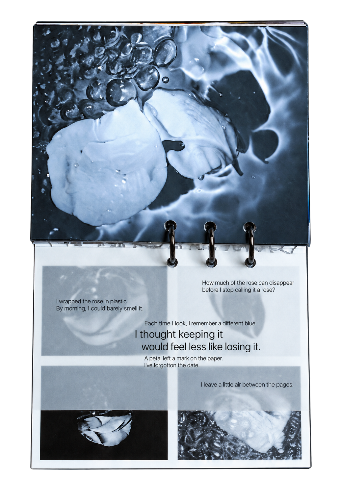

What a Rose Remembers
Zine · Book design
What a Rose Remembers examines the relationship between preservation and loss. A rose is wrapped and photographed in an effort to keep it, yet its scent fades and its image changes with each recollection. The publication returns to a question written within its pages: how much of a rose can disappear before we stop calling it a rose?
The ring-bound book returns to blue-toned photographs of the rose. Drawings and fragments of writing appear between them, and layered materials partly hide the images. As pages of different sizes turn, the flower comes back into view in pieces, much as a memory holds onto certain details and lets others fade.
“I thought keeping it would feel less like losing it.”

